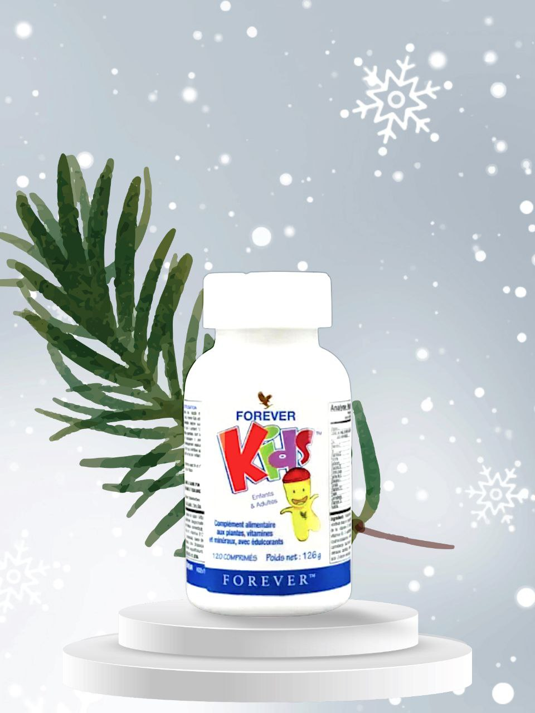
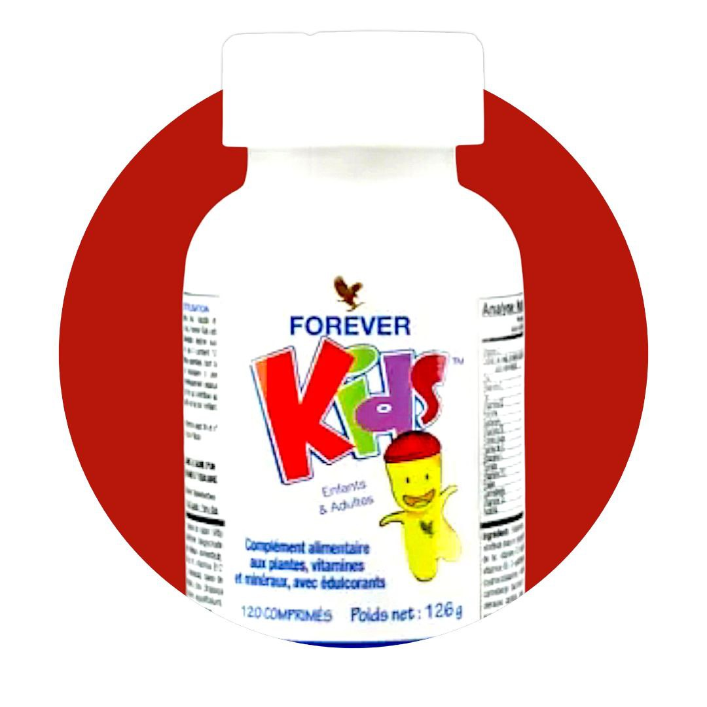
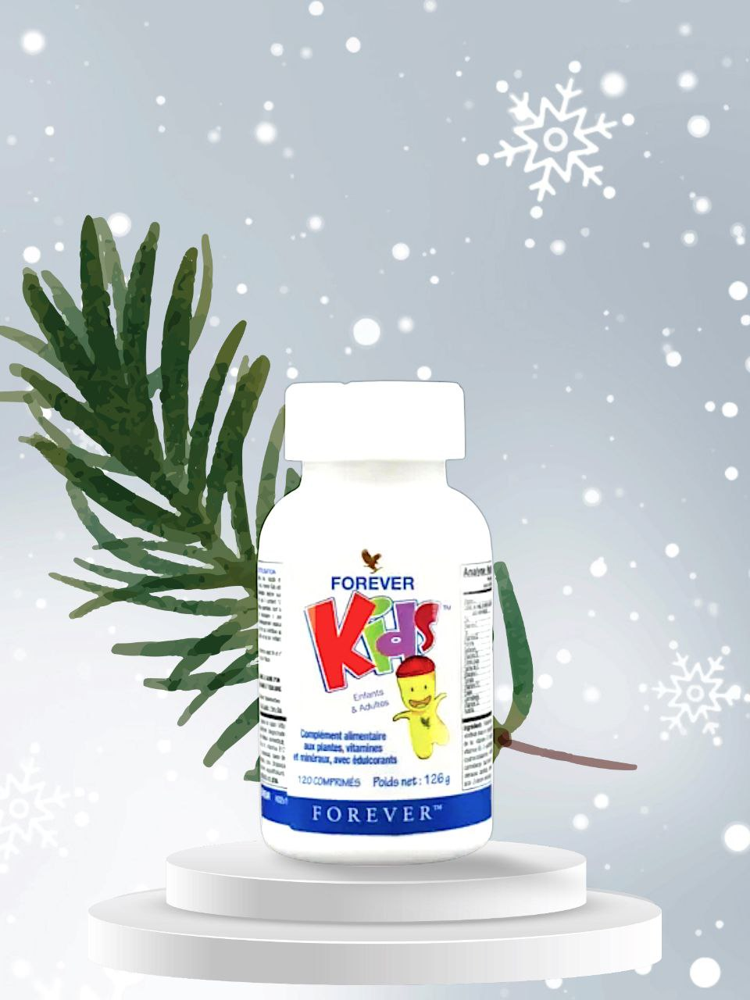
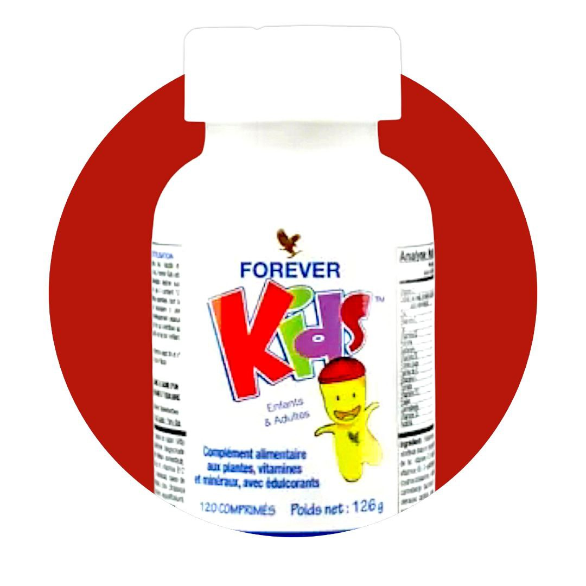

فوريفر كيدز 
امنح طفلك جميع الفيتامينات والمعادن التي يحتاجها جسمهم المستخرجة من العنب ذو مذاق رائع قابل للمضغ بدون نكهات أو ألوان أو مواد حافظة صناعية. فوريفر كيدز® عبارة عن فيتامينات متعددة جيدة للاستخدام ومفيدة للأطفال من جميع الأعمار
Price: 65 AED
- شحن سريع
- الدفع عند الاستلام
- منتجات طبيعية وآمنة بجودة مضمونة